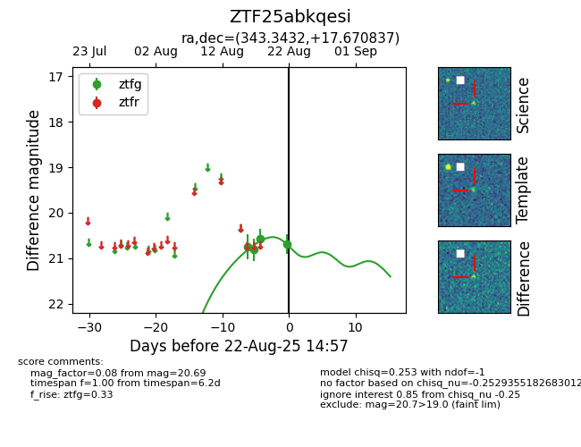

Target ZTF25abkqesi at 2025-08-22 14:57, see:
FINK: fink-portal.org/ZTF25abkqesi
Lasair: lasair-ztf.lsst.ac.uk/objects/ZTF25abkqesi
ALeRCE: alerce.online/object/ZTF25abkqesi
alt names
ZTF25abkqesi (ztf,alerce)
coordinates:
equatorial (ra, dec) = (343.3432,+17.67084)
galactic (l, b) = (87.0214,-36.83591)
photometry
last ztfg=20.69
4 ztfg detections
